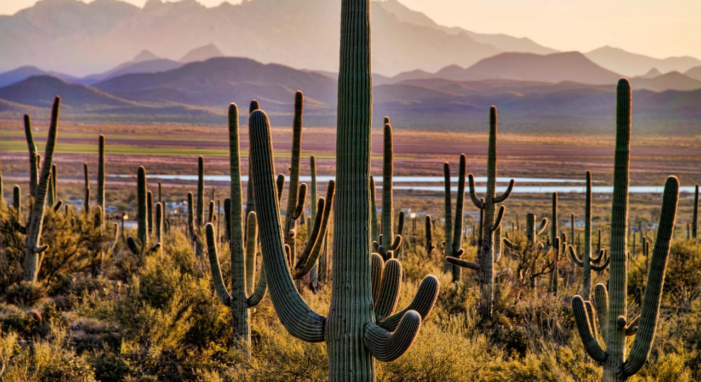

BAJA CALIFORNIA
Baja California, oficialmente Estado Libre y Soberano de Baja California, es uno de los treinta y un estados que, junto con la Ciudad de México, conforman México. Su capital es Mexicali y su ciudad más poblada es Tijuana, cabecera del municipio homónimo, el más poblado del país. Se encuentra dividido en siete municipios.
Se ubica en la parte Norte de la península de Baja California en la región noroeste del país. Limita al norte con California, al este con Sonora y el golfo de California, al sur con Baja California Sur y al oeste con el océano Pacífico. Con 71 450 km² representa el 3.6 % del territorio nacional, siendo la duodécima entidad federativa más grande del país.
Su población según el Censo de 2020 es de 3 769 020 habitantes que presenta el 3 % de la población mexicana, siendo la décimo cuarta entidad más poblada del país, cercana al puesto medio de puesto diecisiete. También es la décima cuarta entidad menos densamente poblada, también cercana al puesto medio.
Su Índice de Desarrollo Humano (IDH) es uno de los más altos de México, el cuarto a nivel nacional, calificado como muy alto. Además es la duodécima entidad por Producto Interno Bruto (PIB) y décimo tercera en competitividad según datos del IMCO. Debido a su posición geográfica —colindante con Estados Unidos— permite un área de conexión comercial y cultural. También es uno de los estados más visitados del país. El Valle de Guadalupe (Ensenada) es el mayor productor de vinos en México, reconocido a nivel internacional.
En 1931 el Territorio de Baja California —que había sido constituido desde 1824— se dividió y se formó el Territorio Norte de Baja California. Dicho territorio federal fue elevado de rango a estado libre y soberano el 16 de enero de 1952.
TOPONIMIA
El nombre California ya existía antes del descubrimiento de América o primera exploración de los europeos en tierras como nombre de un país ficticio y paradisíaco. Es dudosa la relación de tal apelación con el similar "Califerne", nombre de una reina no cristiana de la Canción de Roldán, cuya etimología es diferente (del francés "calife"). En la novela de caballería Las sergas de Esplandián, publicada en 1510 en Sevilla (España), se cita por vez primera el nombre tal y como lo conocemos en la actualidad, quizá proveniente de "Cálida fornax" u ‘horno caliente’ más el sufijo de país -ia.
"Sabed que a la diestra mano de las Indias existe una isla llamada California muy cerca de un costado del paraíso Terrenal; y estaba poblada por mujeres negras, sin que existiera allí un hombre, pues vivían a la manera de las amazonas. Eran de bellos y robustos cuerpos, fogoso valor y gran fuerza. Su isla era la más fuerte de todo el mundo, con sus escarpados farallones y sus pétreas costas. Sus armas eran todas de oro y del mismo metal ponies mágicos eran los arneses de las bestias salvajes que ellas acostumbraban domar para montarlas, porque en toda la isla no había otro metal que el oro".
Sin embargo, según Fernando Jordán en su libro "El otro México" dice:
Cristóbal Colón, que al descubrir el continente [...] Desde entonces, esa desconocida e inabordable isla de las amazonas habría de llamarse California. El nombre, por lo demás, no era nuevo; Montalvo lo encontró y lo tomó al leer La Canción de Rolando. "Muerto está mi sobrino que conquistó tantas tierras,y ahora los sajones se rebelaron contra mi,y los húngaros, y los búlgaros y tantos otros, los romanos, los de pulla y los de palermo y los de África y los de California."
HISTORIA
En una remota antigüedad calculada en catorce mil años llegaron a la península por la ruta de las costas del Océano Pacífico los primeros grupos humanos nómadas, de economía de subsistencia. Las lenguas yumano-cochimíes constituyen una familia lingüística de lenguas amerindias hablados en California y Arizona, Estados Unidos; y la península de Baja California y el noroeste de Sonora en México. Fue incluida entre las lenguas hokanas por Voegelin y Haas, y como hoka-sioux, según Edward Sapir.
Existían tres grupos tribales perfectamente definidos en la época prehispánica; los pericúes, guaycuras y cochimíes. Los pericúes habitaban la parte sur de la península y se extendían hacia el norte, desde Cabo San Lucas hasta la parte media de la península. Los guaycuras habitaban la parte media y los cochimíes en el extremo norte.
Paralelamente a los cochimíes se anota la existencia de otros grupos nómadas tales como; los kumiai (k'miai), una de las familias indígenas que junto con los cucapá, paipai, kiliwa, cahilla y akula poblaron el norte de la península de Baja California, todos pertenecientes al tronco yumano.
Baja California fue poblada originalmente por los kumiai (k'miai), una de las familias indígenas que junto con los cucapá, pai pai, kiliwa, cahilla y akula poblaron el norte de la península de Baja California.
LAS PRIMERAS EXPLORACIONES ESPAÑOLAS
LA PRIMERA EXPEDICIÓN EN TIERRAS DEL ESTADO DE BAJA CALIFORNIA
Se considera actualmente a Hernán Cortés como el conquistador de la península, aunque el primer europeo que desembarcó en lo que hoy es la península de Baja California fue el piloto y navegante español Fortún Jiménez quien al mando del navío Concepción, cuyo patrón era Hernán Cortés, avistó y visitó en el año 1534 la península, de la cual pensó era una isla.
El primer europeo que puso pie dentro de lo que hoy es el estado de Baja California fue el navegante Francisco de Ulloa, que recorrió ambos litorales de la península de Baja California entre 1539 y 1540, así como la costa del hoy estado de Sonora.
Hernán Cortés, que ya había patrocinado tres viajes de exploración en el Mar del Sur (Océano Pacífico) y los cuales habían terminado en fracasos, decidió enviar un cuarto viaje de exploración al Mar del Sur al mando de Francisco de Ulloa en 1539. Partió la expedición del puerto de Acapulco el día 8 de julio del año citado a bordo de los buques Santo Tomás, Santa Águeda y Trinidad, a la altura de las Islas Marías se vieron obligados a abandonar el navío Santo Tomás, por lo cual continuaron el viaje de exploración en los dos buques restantes.
Ingresaron al Golfo de California y visitaron en el viaje de ida y de regreso la abandonada población de la Santa Cruz, conocida actualmente como La Paz, llegaron al extremo norte del Golfo de California el 28 de septiembre, a lo que se conoce actualmente como desembocadura del Río Colorado y llamaron a la boca del río "Ancón de San Andrés", una breve acta fue levantada cuyo texto se transcribe:
Yo Pedro de Palencia, escribano público de esta armada, doy fe y verdadero testimonio a todos los señores que la presente vieren, a quienes Dios nuestro señor guarde de mal, como en veintiocho días del mes de septiembre de quinientos treinta y nueve años, el muy magnificó señor Francisco de Ulloa, teniente de gobernador y capitán de esta armada por el ilustrísimo señor Marqués del Valle de Guajaca, tomó posesión en el ancón de San Andrés y mar bermeja, que es en la costa desta Nueva España hacia el Norte, que está en altura de treinta y tres grados y medio, por el dicho Sr. Marqués del Valle en nombre del Emperador nuestro rey de Castilla, actual y realmente, poniendo mano a la espada, diciendo que si había alguna persona que se lo contradijese, que él estaba presto para se lo defender, cortando con ella árboles, arrancando hierbas, meneando piedras de una parte a otra, y sacando agua de la mar; todo en señal de posesión. Testigos que fueron presentes a lo que dicho es los reverendos padres del señor San Francisco, el padre Fray Raymundo, el padre fray Antonio de Mena, Francisco de Terrazas, veedor Diego de Haro, Gabriel Márquez. Fecho día mes y año susodicho. Y yo Pedro de Palencia, escribano público de esta armada, le escribí según ante mi pasó; por ende fijé aquí este signo mío, que es tal, en testimonio de verdad.
Pedro de Palencia, escribano público. Frater Ramundus Alilius, Frater Antonius de Mena, -Gabriel Márquez. -Diego de Haro. -Francisco de Terrazas.
Después de haber desembarcado y tomado posesión de las tierras del extremo Norte del Mar Bermeja (Golfo de California), nombre que le dieron por la coloración rojiza de las aguas que se teñían con las aguas procedentes del Río Colorado, iniciaron el regreso al poblado de la Santa Cruz, doblaron el Cabo San Lucas e ingresaron en el Océano Pacífico, por la actual Bahía Magdalena pasó el día 5 de diciembre sin haber ingresado por estar herido Ulloa, a causa de una escaramuza que sostuvo con los nativos. Con fecha de 5 de abril de 1540 dirigió a Cortés desde la Isla de Cedros una relación de los sucesos de la exploración en uno de los dos barcos, en el otro continuó con la exploración, nunca más se supo de Francisco de Ulloa y de sus compañeros de navegación.
LA EXPEDICIÓN DE JUAN RODRÍGUEZ CABRILLO
El 24 de junio de 1542 en tres buques parte la expedición del puerto de Navidad Colima, México, acompañaban a Juan Rodríguez Cabrillo, marineros, soldados, indios, un sacerdote, alimentos para dos años, animales en pie y mercancías. Cabrillo comanda la pequeña flota a bordo del San Salvador buque insignia que él mismo construyó.
Después de zarpar recorre la costa de Colima y enfila hacia la península de Baja California la cual tuvo a la vista el 3 de julio, arribó a San José del Cabo, Baja California Sur y ahí se proveyó de agua, el día 13 del mismo mes descubre la Bahía de Magdalena a la que nombra como tal, el día 5 de agosto ingresan a aguas del hoy estado de Baja California y re-descubren la Isla de Cedros en la cual permanecen hasta el día 10 del mismo mes, prosiguen su viaje costeando la península de Baja California y levantando mapas, el martes 22 de agosto de 1542 entraron a la Bahía de San Quintín a la que bautizó con el nombre de “Puerto de la Posesión”, debido a que fue ahí donde realizaron su primera toma de posesión en nombre de la corona española.
Rodríguez Cabrillo había sido enviado por el primer virrey de la Nueva España, don Antonio de Mendoza, para cartografiar el litoral del Pacífico norte de la poco conocida California. Rodríguez Cabrillo tuvo problemas: una de las naves hacía agua y en tales circunstancias encabezó el primer encuentro entre hispanos y naturales de la tierra, muy posiblemente kiliwas (aunque esto puede ser erróneo dado la alta movilidad social del mundo prehispánico en estas tierras). Rodríguez y su tripulación debían reparar la falla del barco y en estas apremiantes circunstancias su prioridad era encontrar madera e iniciar la reparación que duraría 5 días: Hasta el domingo siguiente. los nativos se reportaron con datos muy interesantes. La expedición recargó sus reservas de agua dulce, (seguramente sus hombres cazaron en los humedales). Rodríguez hondeaba los colores de España y fue en San Quintín donde hispanos pisaron la tierra de lo que ahora es Baja California por primera vez. El día 17 de septiembre llegan al hoy puerto de Ensenada al que nombran San Mateo. De ahí Cabrillo siguió navegando hacia el norte hasta entrar en aguas del hoy estado de California, en donde murió.
LA ÉPOCA DE LAS MISIONES
Luego de la conquista española sobre el Imperio Azteca y la zona mesoamericana, transcurrió poco más de un siglo intentando hacer lo propio en la península, hasta 1683 que fundaron los jesuitas la Misión de San Bruno al sur. La historia de las misiones bajacalifornianas puede dividirse en tres periodos,determinados por la presencia de otras tantas agrupaciones religiosas que, en mayor o menor grado, impusieron su sello propio a la organización y la vida misionales: Jesuitas, Dominicos y Franciscanos. Primero fueron los jesuitas (1697-1768) los que tomaron a su cargo las tareas de evangelización de los pueblos californios. En lo que ahora es Baja California fundaron las misiones de Santa Gertrudis y San Borja. Luego, tras el extrañamiento de la Compañía, las misiones fueron encomendadas a los padres franciscanos del Colegio de San Fernando de México (1768-1772).
SIGLO XIX
El 2 de marzo de 1804, el alférez José Manuel Ruiz le pidió al gobernador Joaquín de Arrillaga un terreno cerca de la bahía de Ensenada de Todos los Santos. El terreno amparaba dos sitios de ganado mayor, equivalentes a unas 3510 hectáreas, que limitaban al oeste con el litoral del Pacífico, al este hasta la serranía, al sur con lo que hoy es Maneadero y al norte con el Arroyo del Carmen, lo que actualmente es la ciudad de Ensenada.
Con la proclamación de la constitución de 1824 se instaló el territorio de Baja California, conformado por los actuales estados de Baja California y Baja California Sur. En 1829, casi al finalizar la época misional y 9 años después de consolidada la Independencia, José María Echendía, gobernador de las Californias, concedió a Santiago Argüello Moraga, una superficie de seis sitios de ganado mayor, equivalente a 10,000 hectáreas, que sería llamado "Rancho Tía Juana". La misión fue secularizada por el gobierno mexicano en 1834, y la mayoría de las tierras de la misión fueron otorgadas a exsoldados. Más allá de la ciudad de San Diego, se formaron ranchos que sirvieron para aumentar la economía local. Algunos de los que ocupaban parte de lo que ahora es Tijuana son el Rancho San Antonio, Rancho Cerro Colorado, Rancho Cuero de Venados y Rancho San Isidro.
En 1846, con motivo de la guerra México - Estados Unidos, inicia la Marina de guerra de Estados Unidos la invasión de Las Californias. La lucha que se desató, obligó a México a negociar la forma de concluir la catástrofe; la disyuntiva era aceptar la paz o continuar la guerra. Una vez firmado el armisticio, la atención se centró en fijar los nuevos límites. México, tras consultar al Congreso y a los gobiernos de la República, se vio obligado a firmar el Tratado de Guadalupe-Hidalgo el 2 de febrero de 1848, perdiendo más de la mitad de su territorio, incluidos Alta California, Arizona, Nuevo México y Texas. El 12 de abril de 1849, el Congreso divide al territorio de Baja California en dos partidos, denominados Norte y Sur. Un año más tarde se establecía que su representación política sería por parte de un diputado y un jefe político.
La región sufrió una invasión el 29 de noviembre de 1853 por William Walker y acompañantes quienes querían formar una República independiente de México con el nombre de Sonora-Baja California, pero el heroico Antonio Meléndrez y los rancheros ensenadenses lograron expulsarlos hasta la línea fronteriza. El 2 de diciembre de 1855 se constituye que el Partido Norte del Territorio de Baja California es comprendido por un solo municipio: Santo Tomás de la Frontera.
A principio de 1873 se descubrió oro en el sitio denominado Japa, 50 kilómetros al este de Real del Castillo. Ello provocó un desplazamiento de varios de sus habitantes hacia dicho punto y de personas de origen mexicano procedentes de la Alta California. Buscadores de oro norteamericanos cruzaron y los pocos pobladores de Baja California migraron al naciente lugar. Para agosto, el lugar tenía más de 400 gambusinos buscando el preciado material. Gracias a eso, comerciantes del puerto de San Diego abrieron sus tiendas en el poblado y corrían líneas de diligencia entre la bahía de San Diego y las minas. El lugar contaba con más de 1500 habitantes para 1875. Con el tiempo, Ensenada se convirtió en la vía de entrada de mercancías y provisiones de San Diego y San Francisco, con destino a los centros mineros. Sin embargo, tres años después las minas decayeron y la fama de Real del Castillo fue declinando.
El 15 de mayo de 1882 se dice la fecha oficial de la fundación de Ensenada, por decreto del Presidente Don Porfirio Díaz declara que la cabecera del partido norte de Baja California pasa del Real del Castillo a Ensenada de Todos Santos. Ante el creciente auge del Territorio de la Baja California, por decreto presidencial del general Díaz, de 14 de diciembre de 1887, la península se dividió en dos distritos: Sur y Norte, y Ensenada fue designada cabecera de este último.
Al norte, el 11 de julio de 1889 se firmó el convenio que concluyó el litigio, que sobre los terrenos del Rancho Tía Juana sostuvieron por largo tiempo los herederos de don Santiago Argüello. A dicho convenio se le anexó un plano de fecha 15 de junio del mismo año, con el nombre de Mapa del pueblo Zaragoza proyectado para localizarse en terrenos del rancho de Tijuana. Sin embargo, el 10 de febrero de 1891, el área donde se asentaba en un principio el pueblo quedó totalmente devastada debido a las aguas torrenciales de las lluvias que cayeron durante cinco días, por lo que su ubicación se movió al sureste, retirados del lecho del río. El 5 de junio de ese mismo año, el Congreso decreta los límites oficiales del territorio norte, partiendo del Paralelo 28 al sur, hasta la frontera con Estados Unidos al norte, y el Río Colorado, al este.16
SIGLO XX
En 1911 durante los eventos de la Revolución Mexicana la jefatura política y militar se ubicaban en Ensenada que también era la ciudad más poblada del Distrito Norte con 2000 habitantes, por lo que todas las decisiones políticas del territorio se tomaban en la ciudad. (En este periodo el municipio de Ensenada tenía el nombre de Municipio de La Frontera y abarcaba todo el territorio del Distrito). Mientras tanto, el descontento comenzaba a surgir en Mexicali, ya que después de que fue tomado por grupos maderistas, los habitantes habían tenido que refugiarse durante 6 meses durante el tiempo que duró la ocupación. Finalmente, el descontento fue tan grande, que los habitantes de Mexicali exigieron tener su propia municipalidad y luego de una serie de acusaciones solicitaron que: "sea erigida en municipio la sección de Mexicali, que hoy depende del ayuntamiento de Ensenada" y el 4 de noviembre de 1914, Baltazar Avilés, Jefe Político del Distrito Norte de Baja California, decretó la creación del segundo municipio, Mexicali, y su ayuntamiento entró el 1.º de enero de 1915, fecha en la que también, por ordenes del coronel Esteban Cantú, la capital del distrito pasó de Ensenada a Mexicali.
El 11 de marzo de 1917, se decretó la creación de los municipios de Tecate y Tijuana, antes pertenecientes a Ensenada. El 2 de enero de 1923, después de que Tecate ya había sido declarado municipio, el gobernador José Inocencio Lugo, decretó su supresión y desaparición para incorporarlo de nuevo al municipio y administración de Mexicali. Pero esto duró hasta el 15 de octubre de 1925, cuando se creó el cuarto municipio, Tijuana, pues Tecate fue anexado a la jurisdicción del nuevo municipio.
El nuevo concepto jurídico de los municipios funcionó hasta 1929, cuando Abelardo L. Rodríguez por decreto suprimió los ayuntamientos el 31 de abril para que se formaran los consejos municipales. Por esto, los municipios libres pasaron a ser delegaciones municipales y las delegaciones a subdelegaciones, de manera que el Distrito Norte de Baja California quedó conformado por 3 delegaciones: Ensenada, Mexicali y Tijuana.
El 1º de septiembre de 1951, el presidente Miguel Alemán anuncia en su informe que el Territorio Norte de Baja California satisface las condiciones exigidas por la fracción segunda del artículo 73 de la Constitución General de la República. A partir de esa fecha el ejecutivo comenzó a promover la creación del nuevo estado de Baja California.
El 16 de enero de 1952 Miguel Alemán publica el decreto (aprobado por el Congreso el 31 de diciembre de 1951), mediante el cual se reforma los artículos 43 y 45 constitucionales, que da paso a la creación del nuevo estado de Baja California, cuyo territorio es el anterior Territorio Norte de la Baja California.
El 23 de septiembre de 1952 se envía a la Cámara de Diputados una serie de disposiciones complementarias para la constitución del Estado de Baja California.
Alfonso García González es designado gobernador provisional del nuevo estado. El 31 de diciembre de 1952 se lanza la convocatoria para la elección de los siete diputados constituyentes. Y se crean los primero distritos electorales los cuales quedan conformados de la siguiente manera: Mexicali, 1o. y 2o.; Valle de Mexicali 3o.; Tecate y parte del valle de Mexicali, 4o.; Tijuana 5 y 6o. y Ensenada 7o.
El 16 de enero de 1952, el Distrito Norte de Baja California deja de ser un territorio federal para convertirse en el Estado Libre y Soberano de Baja California, conformado por 4 municipios: Ensenada, Mexicali, Tecate y Tijuana.
Se realizaron las primeras elecciones del Estado, el 29 de marzo de 1953, para la elección de los siete diputados constituyentes. Los partidos contendientes fueron el PRI, el PAN, el FPP (Federación de Partidos del Pueblo y la UNS (Unión Nacional sinarquista). Los tres últimos presentaron candidatos comunes. Los ganadores de esta elección fueron los siete candidatos del PRI.
La Constitución Política del Estado de Baja California se promulgó el 16 de agosto de 1953.
La primera elección para gobernador del estado se llevó a cabo el 25 de octubre de 1953, así como para la 1a. Legislatura en el estado. Los candidatos a gobernador participantes fueron Francisco Cañedo Lizárraga por el PAN, Braulio Maldonado por el PRI y Maurilio Vargas por el FPP; resultando ganadores, tanto en la gubernatura como en las diputaciones, los candidatos del PRI. Cabe señalar que por la reforma constitucional de 1953, Aurora Jiménez de Palacios, es la primera mujer por Baja California al Congreso de la Unión. Además fueron las primeras elecciones en México en que votan las mujeres.
El 1º de diciembre de 1953 toma posesión como gobernador del Estado Braulio Maldonado Sández.
GEOGRAFÍA
LÍMITES
Baja California tiene dos litorales. Al oeste limita con el Océano Pacífico y por el este con el Golfo de California. La geografía del estado es muy diversa. La Sierra de Baja California está situada en medio de la península y en su largo tramo tiene diferentes denominaciones; las más importantes son la Sierra de Juárez y la Sierra de San Pedro Mártir, en la cual se encuentra el Pico de la Encantada - el de mayor altura en la península. Desde el Pico de la Encantada se puede apreciar gran parte del Alto Golfo de California y el Desierto de San Felipe.
Entre estas sierras se pueden encontrar algunos valles fértiles como los de Guadalupe y el Valle de Ojos Negros. El clima templado hace que esta área sea excelente para el cultivo de la vid y de algunas frutas cítricas. El área también es rica en minerales. Al sur del estado, la Sierra se aproxima más hacia al Golfo de California y se aleja del Pacífico, formando una planicie al sur llamada los Llanos del Berrendo.
Los vientos del Pacífico y la corriente marina de California hacen que el clima en el extremo noroccidental sea benigno casi todo el año. Las ciudades costeras de Playas de Rosarito y Ensenada tienen uno de los mejores climas de México. Pero debido a esta misma corriente marina fría, las lluvias del norte raramente llegan a la península y esto hace que el clima se haga más seco y árido conforme se avanza al sur. Al sur del poblado de El Rosario, el paisaje se hace desértico. Este desierto, sin embargo, es rico en plantas endémicas como el Cardón, el Cirio y el Ocotillo, entre otras. Estas plantas sobreviven en parte gracias a la niebla costera frecuente en el área. El paisaje desértico se puede observar en todo su esplendor al manejar por la carretera transpeninsular MX-1.
Existen numerosas islas en la costa del Pacífico. La remota Isla de Guadalupe es hogar de grandes colonias de lobos marinos. En la Isla de Cedros existe una pequeña comunidad dedicada sobre todo a la pesca. Las Islas de Todos Santos son visitadas por gente dedicada al surf, ya que sus olas son algunas de las más grandes del mundo.
Al este del territorio, el Desierto de Sonora domina el panorama. Algunas de las temperaturas más altas en el país se registran en el Valle de Mexicali. Sin embargo, con los mecanismos de irrigación del Río Colorado, este lugar se ha convertido en un emporio agrícola. Cerca de Mexicali se encuentra el área geológica de Cerro Prieto, la cual produce cerca del 80% de la electricidad que requiere Baja California y aun puede exportar el excedente a California. La Laguna Salada, que se encuentra entre las Sierras de Juárez y de los cucapá, también se localiza cerca de Mexicali. El punto más alto en la sierra Cucapá se alza 1,087 msnm pero su montaña más famosa es el Cerro del Centinela, de 781 msnm, por ser símbolo regional y parte del escudo de la ciudad de Mexicali.
En la costa oriental se localizan muchas playas. Algunos poblados pesqueros y turísticos, como San Felipe y Bahía de Los Ángeles, son un gran atractivo entre quienes buscan aventura, buenas playas y mariscos frescos. El área al sur de San Felipe está casi sin desarrollar. Así mismo, se pueden encontrar muchas bahías con excelentes playas. Todas las islas del golfo de California pertenecientes al estado están ubicadas adyacentes a los municipios de Mexicali y San Quintín.
Las mayores fuentes hidrológicas del estado son los ríos Colorado y Tijuana. El Río Colorado termina su largo cauce en el Delta del Golfo de California y sus aguas son aprovechadas para la irrigación del valle de Mexicali y para el suministro de agua a la capital del estado. El resto del estado depende de las aguas subterráneas, algunas presas y hasta algunos oasis ubicados en la península.
El clima de Baja California es muy diverso; varía de mediterráneo a árido.
El clima mediterráneo se localiza en la parte noroeste del estado, con sus veranos secos y sus inviernos frescos y lluviosos. Este tipo de clima se puede encontrar desde Tijuana hasta los valles interiores. La corriente fría de California generalmente crea niebla cerca de las costas. Esta niebla se puede presenciar en cualquier parte del estado colindante al Océano Pacífico.
El cambio de altitud hacia la Sierra de Baja California provoca un clima alpino en esta región. Los veranos son frescos y los inviernos pueden ser muy fríos. Las nevadas son comunes en la Sierra de Juárez (por ejemplo, en La Rumorosa y en la Laguna de Hanson) y en la Sierra de San Pedro Mártir (y en los valles interiores entre estas sierras) desde diciembre hasta abril.
Las lluvias son escasas de las montañas, provocando climas áridos. El Desierto de Sonora se caracteriza por tener veranos muy cálidos e inviernos moderados. El Valle de Mexicali (el cual está por debajo del nivel del mar) experimenta las temperaturas más altas del país.
Más hacia el sur por la costa del Océano Pacífico, el clima también se hace desértico; pero no es tan extremoso y cálido como en la costa del Golfo de California. Los climas de transición (del mediterráneo al desértico) se pueden encontrar desde San Quintín hasta El Rosario. Hacia el Este y cerca del Golfo, la vegetación es muy escasa y las temperaturas son muy altas en el verano. El clima desértico también se encuentra en todas las islas del Golfo de California. Algunos oasis se localizan en poblados como Cataviña, San Borja y Santa Gertrudis.
FLORA Y FAUNA
Muchas de las especies terrestres o marinas que habitan en la península de Baja California son originarias de ahí. Recientemente, Guadalupe se ha posicionado como uno de los mejores lugares en el mundo para el avistamiento del gran tiburón blanco. La isla es un santuario para la vida salvaje desde 1975.
La fauna de Baja California es rica y variada, pudiéndose contar como animales principales los siguientes, agrupados por especies:
Mamíferos: ballena gris, oso marino de Guadalupe, lobo marino, ardilla, borrego salvaje, berrendo, cabra montés, nutria marina, cacomixtle, conejo, coyote, cuyo, gato montés, jabalí, liebre, onza, puma, rata canguro, tejón, tigrillo, venada, xoloitzcuintle, zorra y zorrillo.
Aves: agachona, aguilucho, alondra, alcatraz, búho, correcaminos, huitlacoche, chachalaca, gallardeto, gallina de agua, garzo, gavilán, gaviota, ganga, huilota, halcón, pájaro mosca, saltapared, tórtolo, codorniz, cóndor de California.
Peces: atún, totoaba, carpa, cabrilla, dorado, mojarra, tiburón blanco. De acuacultura: tilapia, trucha arco-iris
En cuanto a la flora, destaca la planta llamada árbol cirio (Fouquieria columnaris), endémica de la península.
El saguaro es de característico tallo columnar, que puede alcanzar una altura de 15 m y un diámetro de 65 cm. Presenta ramificaciones que pueden encontrarse en un número superior a 7; y pueden a su vez presentar nuevas ramificaciones. La cantidad de las facetas del tallo (las costillas), son entre 12 y 24 y son obtusas. Las areolas son de color pardo, y están separadas entre sí unos 2 cm. En la zona apical la distancia es menor y aparecen recubiertas por un fieltro color pardo. Las espinas radiales pueden ser 12 o más, y las centrales entre 3 y 6 de hasta 7 cm. de longitud. Son de color pardo y se van volviendo grises a medida que la planta envejece. Las flores, de pétalos cortos, aparecen en la parte superior de los tallos. Son de un destacado color blanco y tienen 12 cm. de diámetro. El fruto es rojo y además comestible; madura en verano. La floración es en primavera; las flores se abren durante la noche y permanecen abiertas parte del día siguiente.
De crecimiento muy lento, se calcula que 1 metro de saguaro necesita de unos 30 años en las mejores condiciones de sequedad y luz. La velocidad máxima que puede alcanzar en alguna ramificación vigorosa es de unos 10 cm por año. Los ejemplares más grandes que existen en la parte del desierto que corresponde a Arizona pueden tener 200 o 300 años. También existe la cachanilla, se puede observar en muchos lugares del valle de Mexicali, aunque en la actualidad se logra ver en menor cantidad a diferencia de lo que fue en el siglo XX.
NUTRIA MARINA
La nutria marina (Enhydra lutris) es una especie de mamífero carnívoro de la familia de los mustélidos; es la única especie existente del género Enhydra. Habita en el Pacífico Norte, desde el norte de Japón hasta Baja California en México.
Los adultos de esta especie pesan entre catorce y cuarenta y cinco kilogramos, siendo el más pesado de los mustélidos y al mismo tiempo uno de los mamíferos marinos más pequeños. A diferencia de los otros mamíferos marinos, esta especie tiene como principal forma de aislamiento una capa de pelaje excepcionalmente gruesa, la más densa de entre todos los mamíferos. A pesar de que puede salir a tierra firme, la nutria marina vive casi exclusivamente en el mar. Habita cerca de las costas, donde se sumerge hasta el lecho marino para conseguir comida. Se alimenta principalmente de invertebrados marinos como erizos de mar, moluscos, crustáceos y algunos peces. Sus hábitos alimentarios son notables en varios aspectos. En primer lugar, el uso de piedras para abrir los caparazones de algunas de sus presas la convierte en uno de los pocos mamíferos que utiliza herramientas. Por otro lado, en la mayor parte de su área de distribución, es una especie clave debido al control que ejerce sobre la población de erizos de mar, los cuales de otra forma ocasionarían un daño extenso a los ecosistemas de bosques de algas marinas. Su dieta incluye peces de valor comercial para la industria pesquera, propiciando un conflicto entre las nutrias marinas y los pescadores.
La población de la especie, cuyo número original se estimaba entre 150,000 y 300,000 animales, fue diezmada intensamente, a causa de su piel, entre 1741 y 1911, hasta reducirse en un momento dado solamente a 1000 o 2000 ejemplares. Una prohibición internacional de su caza, esfuerzos de conservación y programas de reintroducción han contribuido al aumento de la población; la especie actualmente ocupa aproximadamente una tercera parte de su área de distribución original. La recuperación de la nutria marina se considera un hito importante en la conservación marina, a pesar de que la población de las islas Aleutianas y California recientemente ha disminuido o se ha estancado en su crecimiento. Sin embargo, por varias razones, entre ellas su gran vulnerabilidad a los derrames de crudo, la especie permanece clasificada como en peligro de extinción.

CÓNDOR DE CALIFORNIA
El cóndor de California, cóndor californiano o cóndor norteño (Gymnogyps californianus) es una especie de ave catartiformen de la familia Cathartidae emparentada con el cóndor de los Andes (Vultur gryphus). Habita en el norte de Arizona y el sur de Utah (incluyendo la zona del gran Cañón y el parque nacional Zion), las montañas costeras del centro y sur de California y el norte de Baja California. Aunque se conocen otros miembros fósiles, es el único superviviente del género Gymnogyps.
El plumaje es negro con manchas blancas en la parte inferior de las alas, la cabeza es calva en gran parte, con el color de la piel que van desde gris en las aves jóvenes a naranja y amarillo brillante en adultos reproductores. Su envergadura (3,0 m) es la más grande de cualquier ave de América del Norte, y su peso de hasta 26 libras (11.8 kg) hace que sea casi igual a la del cisne trompetero, la más grande entre las especies de aves nativas de Norteamérica. El cóndor es carroñero y come grandes cantidades de carroña. Es una de las aves más longevas del mundo, con una vida útil de hasta 60 años.
Los números de esta ave disminuyeron dramáticamente en el siglo XX debido a la caza furtiva, el envenenamiento por plomo y la destrucción de hábitat. Un plan de conservación puesto en marcha por el gobierno de Estados Unidos llevó a la captura de los 22 cóndores silvestres restantes en 1987. Estas aves sobrevivientes fueron criadas en el San Diego Zoo Safari Park y el zoológico de Los Ángeles. Los números se elevaron a través la cría en cautividad y a partir de 1991 fueron reintroducidos en la naturaleza. El cóndor de California es una de las especies de aves más raras del mundo, a partir de mayo de 2012 los recuentos de población cifran el número de cóndores conocidos a 405, incluidas 226 aves que viven en la naturaleza y 179 en cautiverio.
El cóndor es un ave significativa para muchos grupos nativos americanos de California y juega un papel importante en varios de sus mitos tradicionales. Los navajos le dicen jeeshóóʼ y los kiliwas llaman a esta ave como 'see tay, ellos creen que en esta ave vive el espíritu de sus antepasados.
XOLOITZCUINTLE
El xoloitzcuintle o xoloitzcuintli es una raza canina prácticamente sin pelo con promedio de vida entre 12-14 años. Es originario de México; es presentado en tamaño toy, estándar y mediano. Se le conoce por su endemismo en ese país y su estrecha relación con la cultura mexica.
Existe otra variedad con pelo. Los perros que nacen con pelo siguen siendo xoloitzcuintles puros, y al cruzar a estos con uno sin pelo, también tienen crías sin pelo. En una camada pueden nacer cachorros de las dos variedades. Se le agrupa en los tres tamaños. Las dos clasificaciones mayores se destacan como perros guardianes, el miniatura como perro de compañía.
El 12 de agosto de 2016, el Gobierno de la Ciudad de México declaró al perro xoloitzcuintle como «patrimonio cultural y símbolo» de la Ciudad de México.
LOBO FINO DE GUADALUPE
El lobo fino de Guadalupe u oso marino de Guadalupe (Arctophoca philippii townsendi) es una subespecie de la especie A. philippii, del género Arctophoca, que incluye mamíferos pinnípedos de la familia de los otáridos. Esta subespecie puebla el sector oriental del océano Pacífico norte. En Enciclovida la especie se denomina como Arctocephalus townsendi.
Este mamífero carnívoro de ambiente marino es de tamaño medio; los machos llegan a medir 180 cm y pesar 160-170 kg; las hembras miden 120 cm y pesan entre 40-50 g. Sus miembros se caracterizan por tener cuerpo, cuello, nariz y miembros anteriores largos; orejas pequeñas y aletas sin pelo. Mcho más grande que la hembra. Su color principal es el negro (vientre más claro que el dorso). Actualmente, la especie solo se encuentra en la isla Guadalupe (donde se centra su distribución) y en el archipiélago de San Benito en México, por lo que se considera especie endémica de México para estos sitios de la Península de Baja California.
Esta especie marina prefiere habitar costas con numerosas rocas grandes y bloques de lava en la base de los acantilados; también ocupa cuevas que proveen protección y temperaturas bajas. Al sur de la Isla de Guadalupe, donde se distribuye la especie, se presenta una vegetación típica de duna y pastizales. A pesar de que su población está aumentando de tamaño, aún se encuentra en riesgo debido a varias amenazas como la baja diversidad genética de la población, la escorrentía de contaminantes, el tráfico de barcos petroleros, la actividad de extracción de petróleo más al norte, la posibilidad de un derrame de petróleo, fenómenos naturales como El Niño, transmisión de enfermedades e introducción de especies exóticas y de enfermedades en las islas. Por estas amenazas, la NOM-059-SEMARNAT-2010 ha clasificado a la especie como En peligro de extinción. Sin embargo, la Unión Internacional para la Conservación de la Naturaleza (UICN) la tiene clasificada como Preocupación menor (LC) dado que su población ha aumentado y lo continúa haciendo. Son depredadores tope especializados en cefalópodos, pero también consumen peces y crustáceos.
ESCHSCHOLZIA CALIFORNICA
Eschscholzia californica es una especie de papaverácea (Papaveraceae), perteneciente a la subfamilia Eschscholzioideae originaria de California (EE. UU.)y Baja California (México), y naturalizada en varias partes del mundo. Se la utiliza como ornamental ya que en la época estival ofrece numerosas flores de color naranja brillante, aunque debe estar expuesta siempre a pleno sol. El género Eschscholzia incluye doce especies oriundas de América del Norte. Su nombres populares son amapola de California, campanilla, dedal de oro,escholtzia, rasete, raso, y fernandos. Esta planta debe su nombre científico al botánico alemán Johann Friedrich von Eschscholtz que la descubrió en California a principios del siglo XIX.
SAGUARO
Carnegiea gigantea, de nombre común saguaro o sahuaro, es la única especie del género (monotípico) Carnegiea. Es nativa del Desierto de Sonora en Arizona, el estado mexicano de Sonora y las áreas de las Montañas Whipple y Condado de Imperial de California.

PINO PONDEROSA
Pinus ponderosa, el pino ponderosa, pino ponderoso o pino real americano, es una especie de coníferas, originaria del oeste de EE. UU. En inglés se le llama también Bull Pine y Blackjack Pine, así como Western Yellow Pine. El pino ponderosa es el árbol emblema del estado estadounidense de Montana.
GOBIERNO Y POLÍTICA
Baja California fue escenario de movimientos políticos incluso antes de su creación como entidad federativa. Durante la Revolución Mexicana en 1911, un grupo de magonistas protagonizaron la Toma de Tijuana, intentando consolidar una república socialista en México, y que de haberse logrado, hubiera sido la primera en el mundo incluso antes que la Rusia Soviética de 1917. Décadas después y con el crecimiento de sus ciudades, en los años 40s y principios de los 50s, los pobladores del Territorio de Baja California, fueron buscando el reconocimiento como estado libre y soberano, consiguiendo dicho estatus en 1953. A finales de los 60s, un grupo de hombres y mujeres salieron a las calles a defender su voto, liderados por el partido opositor, el PAN, exigiendo al Revolucionario Institucional, respetara los resultados de las elecciones celebradas en 1968, que daba por ganador en Tijuana y Mexicali a los candidatos panistas. Tras manifestarse en la Ciudad de México ante el presidente Díaz Ordáz, el Congreso local determinó resolver la crisis política instalando un Consejo Municipal que posteriormente realizaría de nueva cuenta elecciones.
Casi dos décadas después de lucha por parte de la oposición, en 1980 consiguieron obtener los primeros 3 diputados locales de oposición (PAN y PCM). Tres años después, Ensenada obtendría el primer alcalde de un partido diferente al PRI, hecho que se repetiría en 1986 con la victoria de Ernesto Ruffo Appel en la alcaldía de Ensenada. La conocida "ruffomanía" llevaría, en 1989, al entonces alcalde a convertirse en el primer gobernador de oposición en ganar unas elecciones, marcando a Baja California como cuna de la democracia mexicana. A partir de ahí, comenzaría una etapa de bipartidismo entre el PAN y el PRI, especialmente en las alcaldías y los escaños legislativos. En 2019, tras 30 años de gobiernos panistas, gana Jaime Bonilla Valdez la gubernatura, cediendo el poder al Movimiento de Regeneración Nacional. Dicha elección se vería manchada por las aspiraciones del gobernador electo de ampliar su mandato de 2 años -como había establecido el Congreso en 2014- a 5 años, para terminar en 2024, a la par de las elecciones federales.
FORMA DE GOBIERNO
Baja California, como una de las 32 entidades federativas del país, es autónoma en cuanto a su régimen interior, el cual, de acuerdo a su constitución local y en sincronía con la carta magna federal, es republicano, representativo, democrática, laico y popular; constituido por 7 municipios. De acuerdo con su ley fundamental, la soberanía y el poder público son origen y correspondencia del pueblo, y es este el que decide ejercerlo a través de un sistema de separación de poderes: Jefe de Gobierno (Ejecutivo), Congreso local (Legislativo) y un Poder Judicial, depositado en distintas instituciones, cuya cabeza es el Tribunal Superior de Justicia.
En lo que respecta al Congreso de la Unión, Baja California es representada en igualdad de condiciones que cualquier otro estado. En el Senado es representada por 3 senadores, dos electos por mayoría relativa y uno asignado a la primera minoría; y en la Cámara de Diputados por el número de distritos acorde a su tamaño poblacional. En 2019, fueron elegidos 13 diputados federales.
POBLACIÓN
Según la Encuesta Intercesal realizada por el Instituto Nacional de Estadística y Geografía en 2015, el estado de Baja California contaba hasta entonces con un total de 3'315,766 habitantes. De dicha cantidad, 1'650,341 eran hombres y 1'665,425 eran mujeres. La tasa de crecimiento promedio anual para la entidad durante el período 2010-2015 fue del 1.3%.
Baja California es un estado habitado por una población heterogénea, compuesta en su mayoría por migrantes que han llegado procedentes de toda la república mexicana sobre todo por personas residentes de estados como Sinaloa, Chiapas, Jalisco y el Estado de México. La variedad étnica y su consecuente diversidad cultural son los sellos distintivos de esta zona fronteriza, donde se encuentran las dos ciudades más grandes de la entidad, Tijuana y Mexicali. Esta singular característica ha dado origen a profundos fenómenos sociales cuyos efectos y manifestaciones son continuamente estudiados en prestigiadas instituciones mexicanas y estadounidenses. Más que un estado que marque diferencias es un punto de unión entre culturas. Su capital Mexicali, una de las ciudades más jóvenes de la República, nació cuando se iniciaron las obras de regadío en el río Colorado, y creció económicamente en función de la agricultura sobre todo en la zona del valle.
Aquel pequeño poblado de principios de siglo es ahora una ciudad con cientos de miles de habitantes gracias a la fertilidad del Valle de Mexicali, al intercambio comercial con los Estados Unidos y la industrialización que se inició alrededor de 1985 cuando el perfil primordialmente agrícola de la ciudad se modificó por el industrial.
En el transcurso de unos cuantos años se abrieron parques fabriles con capitales norteamericanos y asiáticos que confieren un carácter dinámico a las actividades económicas y mezclas culturales de esta ciudad, sede de los poder ejecutivo, legislativo y judicial del estado.
GRUPOS ÉTNICOS
En el estado existen 4 pueblos indígenas, los cuales se mantienen aislados de las comunidades urbanas y sorprendentemente han sobrevivido manteniendo su lengua costumbres y tradiciones ancestrales, estos pueblos son; los kiliwas, los cucapá, los paipai y los kumiai, los cuales están emparentados con las tribus yumanas que habitan en los Estados Unidos.
GASTRONOMÍA
Las gastronomía en Baja California deriva de una mezcla de estilos culinarios producto a su vez de los diferentes grupos de personas que migran al estado trayendo consigo las recetas de cada una de sus culturas. Como estado norteño, las carnes son uno de los principales ingredientes en sus platillos aunque no el tradicional, como en estados de Sonora y Nuevo León. La carne de cerdo, el pollo generan complementos para los platillos típicos de la nueva cocina urbana, como hamburguesas, tortas, burros y ensaladas. Los tacos de carne asada son el platillo más popular de la cocina en Tijuana, también llamados Asaderos en Mexicali y los tacos al vapor son populares en el poblado de La Rumorosa. Hay desde puestos en las calles hasta establecimientos. Los sabores varían con estilos exportados de otros lugares del país como los tacos de adobada (variante de los Tacos al Pastor), de birria, de cabeza, chorizo, suadero, entre otros.
La cocina Baja Med, es una fusión de ingredientes mediterráneos, utilizando principalmente vegetales que se cosechan en el estado, así como mariscos. Algunos ejemplos de este estilo gastronómico se encuentran: tacos de pescado a la tempura, Camarones con aguja frita, tomates miniaturas, cebollino y salsa hecha de quesos locales, Carpaccio de remolacha con queso azul y aderezo de menta, pato con brochetas de regaliz espolvoreado con guava, Risotto con nopalitos y pulpo carbonizado y Costillas bañadas en jarabe de higo sobre una salsa de mole negro, por mencionar algunos. La Ensalada César es una de las principales recetas tradicionales de la cocina bajacaliforniana, originaria de Tijuana, creada en las primeras décadas del siglo XX por el chef de ascendencia italiana
En la zona del Valle de Mexicali es ya una tradición la comida china. Los ingredientes principales que utiliza son la salsa de soya, la salsa de ostión y el frijolito negro. Los platillos más populares incluyen el arroz frito, el chop suey, la sopa wonton y el pato estilo Pekín, el cual es tradicionalmente preparado al cocerlo en vapor y después en un horno con carbón vegetal, cubierto con melaza para darle una textura crujiente a la piel; este es uno de los platillos favoritos de los mexicalenses. Otros platillos que también son del gusto de la gente son las carnitas coloradas, el pollo con piña, el arroz frito y los platillos de especialidad, como el pescado estilo chino al vapor con jengibre.
En la zona costera, los platillos más populares son la langosta, en Puerto Nuevo; los tacos de pescado, el chorizo de abulón y la mermelada de tomate en Ensenada y otros platillos de mariscos, como tostadas de ceviche de pescado, camarón o pulpo. De hecho, Ensenada es el único municipio de Baja California en ser parte de la Red de Ciudades Creativas de la UNESCO y fue la primera ciudad mexicana en ser reconocida en el ámbito gastronómico por este organismo mundial, gracias a la gran diversidad y calidad de sus productos naturales. Además, el valle de Guadalupe en Ensenada es uno de los destinos gastronómicos más importantes del país y es uno de los principales destinos de la cocina Baja Med.
En cuanto a postres, las gastronomía local se ha influenciado de los estados norteños aledaños, como Sonora y Sinaloa, con el tradicional pan dulce, las Coyotas, los Coricos, las obleas y las empanadas. En Tecate, el pan dulce es reconocido a nivel internacional y sitio turístico para todo aquel viajero del sur de California.
Por último, en bebidas, Ensenada se mantiene como la ciudad originaria de la popular Margarita, además de ser el principal productor de vino en México, en el Valle de Guadalupe. Tijuana, Mexicali y Ensenada han alcanzado una gran popularidad en la producción de cerveza artesanal, de hecho, Tijuana es considerada "la capital de la cerveza artesanal en México" y en Ensenada se lleva cabo el festival de cerveza artesanal más grande del país "Ensenada Beer Fest". Por su parte, Tecate dio nombre a la famosa marca de la Cervecería Cuauhtémoc. Otras bebidas son la sangría preparada, la Cubalibre y el Clamato preparado.
GOBERNADORA
Marina del Pilar Ávila Olmeda (Mexicali, Baja California; 19 de octubre de 1985)es una abogada y política mexicana, militante del Movimiento Regeneración Nacional. Actualmente es la Primera Mujer Gobernadora de Baja California, desde el 1 de noviembre de 2021. Previamente se ha desempeñado como diputada federal por el distrito 2 de Baja California en la LXIV Legislatura del Congreso de la Unión, cargo que desempeñó de 2018-2019 y también como la Primera Presidenta Municipal de Mexicali, de 2019 a 2021.
TRAYECTORIA ACADÉMICA
En el 2005, Marina del Pilar Ávila Olmeda estudió la Licenciatura en Derecho en el Centro de Enseñanza Técnica y Superior (CETYS Universidad), concluyendo sus estudios en el 2009, y obteniendo el reconocimiento de Alumna Distinguida por alto Rendimiento Académico; posteriormente realizó dos maestrías, la primera en Derecho Público por la Escuela de Graduados en Gobierno y Política Pública del Instituto Tecnológico y de Estudios Superiores de Monterrey, de agosto de 2010 a diciembre de 2011, con la tesis: “La Edad de Responsabilidad Penal en el Sistema Jurídico Mexicano”. La segunda, en Administración Pública por la Facultad de Ciencias Sociales y Políticas de la Universidad Autónoma de Baja California de 2014 a 2016, en la cual después de una etapa de selección fue aceptada como Becaria Conacyt.
En su camino por la academia, Ávila Olmeda publicó artículos en revistas y editoriales jurídicas, destaca el titulado “Evolución del Instituto Electoral y de Participación Ciudadana de Baja California" y también participó como coautora dentro del capítulo “Reflexiones en torno a la docencia e investigación sobre el derecho constitucional para la formación jurídica” del libro “Constitucionalismo. Dos siglos de su nacimiento en América Latina”, publicado por el Instituto de Investigaciones Jurídicas de la Universidad Nacional Autónoma de México.
Ávila Olmeda siguió desenvolviéndose en el ámbito académico como docente en la Facultad de Ciencias Sociales y Políticas de la Universidad Autónoma de Baja California. En distintas entrevistas y discursos públicos ha comentado que sus alumnos universitarios fueron gran parte en su inspiraron e impulso para tomar un rol activo dentro de la política local.
TRAYECTORIA POLÍTICA
Marina del Pilar arrancó su campaña por la Gubernatura de Baja California como candidata de la Coalición “Juntos Haremos Historia en Baja California” Morena-PT-PVEM, el 4 de abril de 2021, en San Quintín, Baja California; de ahí embarcó en una exhaustiva gira por todos los municipios del estado. La campaña electoral de Ávila Olmeda ha sido calificada como “la mejor campaña de todo México” de esa temporada electoral.
Sus propuestas principales iban enfocadas en incentivar programas sociales de bienestar, impulsar las industrias creativas y turísticas, reactivar las inversiones económicas, desarrollar la cultura del deporte y sobre todo reforzar la seguridad. De igual manera, Ávila Olmeda se distinguió por manejar a la par una agenda creada por y para los jóvenes bajacalifornianos denominada “Agenda por el Bienestar de las Juventudes en Baja California” donde se abordaron temas como arte, cultura, deporte, movilidad, sustentabilidad, transporte, seguridad y bienestar, y mecanismos para garantizar en su administración la participación de jóvenes para que sus voces fueran escuchadas.
Marina del Pilar Ávila Olmeda fue blanco de diversas agresiones verbales calificadas por el Tribunal de Justicia Electoral de Baja California como violencia política de género contra las mujeressin embargo, la candidata por la coalición “Juntos Haremos Historia en Baja California” no se vio afectada, ya que llevó a cabo un uso eficiente de sus redes socialesy en conjunto con sus propuestas y campaña física se convirtió en la candidata favorita a ganar la gubernatura. La entonces candidata tuvo eventos de cierre de campaña en todos los municipios del estado, concluyendo finalmente en la ciudad de Tijuana, en un evento donde asistieron más de 20 mil simpatizantes.
El día 6 de junio de 2021 se llevaron a cabo las elecciones a Gobernador del Estado de Baja California, donde Marina del Pilar Ávila Olmeda obtuvo 542 mil 035 votos, lo que representa el 48.4950 por ciento del electorado, y con esa mayoría gana la gubernatura de este estado, celebrando en la ciudad de Mexicali donde reafirmó ante los cachanillas una vez más su compromiso con los principios morenistas de “no mentir, no robar y no traicionar”.
El 15 de junio del mismo año el Instituto Estatal Electoral de Baja California validó el triunfo de Marina del Pilar y le entregó la constancia de mayoría, lo que la acreditó como gobernadora electa del estado. En el mes de agosto formaliza su periodo de transición donde se lleva a cabo los nombramientos del gabinete y elaboración de proyectos estratégicos para su próxima administración.
Marina del Pilar Ávila Olmeda tomó protesta como Gobernadora el día 31 de octubre del 2021, en la ciudad de Mexicali, entre los invitados destacó la presencia de la secretaria de Economía, Tatiana Clouthier; la jefa de gobierno de la Ciudad de México, Claudia Sheinbaum; el líder nacional de Morena, Mario Delgado; el líder de Morena en el Senado de la República, Ricardo Monreal, entre otros. Es así como Ávila Olmeda pasó a convertirse en la primera mujer Gobernadora de Baja California, la Gobernadora más joven en la historia de Baja California y en la primera persona en la historia de México en tomar protesta como Titular del Ejecutivo de una entidad federativa estando embarazada.
ESCUDO
El Sol, símbolo de la luz y fuente inagotable de energía, calor y vida, dentro de la figura del Sol se aprecia la leyenda "Trabajo y Justicia Social" que fue uno de los postulados de la revolución mexicana.
En la cabecera y a cada lado se aprecian dos torsos de figuras humanas, uno de mujer y el otro de hombre, unidos de las manos por el centro, las que proyectan rayos de luz, símbolo de energía.
En su otra mano el hombre sostiene un libro, símbolo de cultura, en tanto la mujer en su otra mano sostiene una probeta que simboliza la química, una escuadra como símbolo de la ingeniería y un símbolo de la medicina. El conjunto expresa el trabajo intelectual y la ciencia unidos para producir fuerza creadora.
En un extremo de la parte media se observa un campo de siembra representado por unos surcos y unas plantas estilizadas que evocan la agricultura como símbolo del estado. En el horizonte una serranía nos recuerda la geografía del estado así como sus recursos mineros. En el otro extremo de la parte media se contempla un engrane en primer término y al fondo una fábrica en plena actividad, en su conjunto la parte media del escudo representa el trabajo agrícola, industrial y minero que se desarrolla en el estado.
En la parte inferior se aprecian el desierto, y el Río Colorado desembocando en el Mar de Cortés o Golfo de California del cual surge la figura de un fraile misionero, uno de tantos que colonizaron la región, ellos trabajaron la tierra y llevaron la luz del evangelio a las almas de los primeros habitantes de la región, el fraile misionero con los brazos abiertos contempla su obra. El conjunto representa el origen misionero de Baja California y el amor de ellos a la tierra y a la humanidad.
A los lados y surgiendo del mar se ven dos olas estilizadas que entrelazan el escudo, entre las olas se ven dos peces, el conjunto representa los dos litorales del estado.